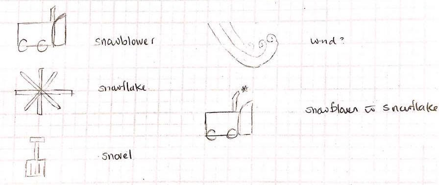

The process of designing the logo for an autonomous snow removal solution.
This is part of a larger project on designing a mobile app for an autonomous snow removal solution. If you're interested you can read more about the project and the process of developing personas for the system or the development of the app interface.
I first sketched out some inital designs on paper, shown below. I wanted to clearley convey the functionality of the app through the icon design, so users would be able to quickly identify the system from their home screen.

For the colour of the icons, I chose to use blue as the base colour because it is a cool colour, which matches the feel of snow. Using Paletton, a colour palette development tool, I developed an number of abstract mood boards and surveyed users to see which colour scheme was the most popular. In the end, a monochromatic blue colour scheme was identified as the most popular.
The final step was to generate a digital version of the icons. I decided to go with a flat icon design, because a skeuomorphic design would require details that would be lost at the small scale required for an icon. The snowflake and the snowblower seemed to best convey the purpouse of the project and so I chose to develop these two icons into a digital version using Sketch.